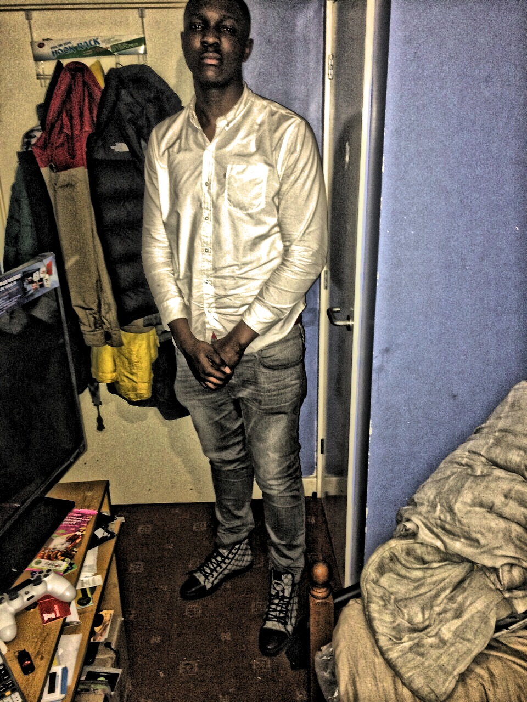

This Is A Short Biography About Qudus
 Qudus Alaka is a current Business Computing BSc student currently studying at Northampton University In the United Kingdom
Qudus Alaka was born in South London, Peckham on 26th February 1997 at the Kings College Hospital. Qudus attended Globe Academy secondary school from 2010 and graduated in 2013 with B in Mathematics, B in English, C in Science, B in Computing & C In Media then he went on to study Business Studies at Saint Francis Xavier Sixth Form in Clapham, London for 2 years. During those 2 years I also worked at Waitrose Super market in Greenwich, London where I was a customer service advisor it was a great experience as this was my first job and the pay rate wasn’t bad either for my age. After a few months I was transferred over to work at the Acton branch as a Groceries picker.
In July 2015 I was accepted at the University Of Northampton with an unconditional offer to study Business Computing, This was an exciting time of my life as I’ve always enjoyed computing & I wanted to widen my knowledge about it.